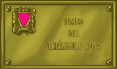

Spazi per la
diversità
Magnus Hirschfeld ed i triangoli rosa
Terrore nazi contro i gays
Quando in 1871 si redasse il nuovo codice penale tedesco, dietro l'unificazione del paese, le relazioni sessuali tra uomini rimasero castigate con prigione (articolo 175). Si imporsi così una visione conservatrice del codice della Prussia su quello delle legislazioni più avanzate, come Baviera o Hannover che, in 1813 e 1840 rispettivamente, avevano depenalizzato l'omosessualità, seguendo l'influenza dell'Illustrazione francese e del codice penale napoleonico.
 In questo contesto, si cominciano ad alzare voci discordanti con questa legislazione punitiva verso i gais, tra le quali sottolinea quella di Magnus Hirschfeld, 1868-1935 chi mise in funzionamento il Comitato Scientifico ed Umanitario (1897) tra i cui obiettivi stava l'analisi scientifica dell'omosessualità e l'abrogazione del codice 175. Il lavoro di Magnus Hirschfeld riuscì che i socialdemocratici facessero una petizione al Parlamento tedesco in 1898 affinché l'articolo in questione rimanesse abrogato che non ebbe successo. Più avanti riuscì anche l'appoggio dei comunisti ed in 1929 un comitato parlamentare speciale raccomandava l'abolizione dell'articolo in questione. Non ebbe successo, nonostante l'ampio schienale che ebbe questa petizione da parte di importanti scienziati, artisti e scrittori tedeschi, tra altri Albert Eisntein.
In questo contesto, si cominciano ad alzare voci discordanti con questa legislazione punitiva verso i gais, tra le quali sottolinea quella di Magnus Hirschfeld, 1868-1935 chi mise in funzionamento il Comitato Scientifico ed Umanitario (1897) tra i cui obiettivi stava l'analisi scientifica dell'omosessualità e l'abrogazione del codice 175. Il lavoro di Magnus Hirschfeld riuscì che i socialdemocratici facessero una petizione al Parlamento tedesco in 1898 affinché l'articolo in questione rimanesse abrogato che non ebbe successo. Più avanti riuscì anche l'appoggio dei comunisti ed in 1929 un comitato parlamentare speciale raccomandava l'abolizione dell'articolo in questione. Non ebbe successo, nonostante l'ampio schienale che ebbe questa petizione da parte di importanti scienziati, artisti e scrittori tedeschi, tra altri Albert Eisntein.
L'ampia maggioranza che i nazisti ottennero quell'anno nelle elezioni impossibilitò qualunque riforma del Codice. Quando finalmente Hitler arriva al potere in 1933, la persecuzione sui gais si intensificò. Nella propaganda nazi gli omosessuali si presentano come responsabili tanto della decadenza morale che viveva la Germania al suo giudizio come del disastro economico della Repubblica di Weimer.
Il 6 maggio di 1933, i nazisti distruggono ed incendiano il prestigioso Istituto di Investigazioni Sessuali, un'altra creazione di Magnus Hirschfeld chi riuscì ad esiliarsi in Francia, dove morì, sparendo così il più importante archivio e biblioteca da tematico GLBT del mondo. La persecuzione verso i gais si intensifica in tutta la Germania, specialmente dietro l'eliminazione di Ernest Röhm e la sua combriccola di camicie brune nella "Notte del coltello lunghi", precisamente il 28 giugno di 1934 chi furono presentati più tardi come alcuni "maiali omosessuali". All'anno seguente -un'altra volta il 28 giugno- si modifica l'articolo 175 per indurire le pene contro i gays.
Gradualmente i nazisti stabiliscono una campagna sistematica di repressione, senza precedenti nella Storia contro chi considerano i suoi nemici ed internano in campi di concentrazione e sterminio: gais, oltre agli ebrei, gitani ed antifascisti. In questi campi, dei che sono tristemente famoso Auschwitz, Mauthausen o Treblinka, i gays fu obbligato a portare un triangolo rosa, come distintivo nei suoi abiti di carcerati, ed una vita miserabile, perché in generale alla homofobia dei propri nazisti si sommava, in non poche occasioni, quella degli altri interni. Inoltre, terminando la guerra non ci fu nessun risarcimento per essi, perché l'omosessualità seguiva penalizzata nella maggior parte dei paesi liberati del giogo nazi.
Magnus Hirschfeld mise le basi di un discorso nuovo verso l'omosessualità, ma gli toccò vivere un'epoca turbolenta ed i suoi importanti apporti scientifici furono taciuti per anni. Il suo nome, come quello di Triangolo rosa, posti nelle placche che danno nome a qualunque spazio pubblico dei nostri paesi o città, oltre ad un omaggio verso chi soffrirono la brutalità ed ingiustizia nazi, devono essere un elemento di rivendicazione della diversità e la tolleranza, di fronte ad alcuni atteggiamenti di odio e barbarie che non devono avere mai capacità nella nostra società.